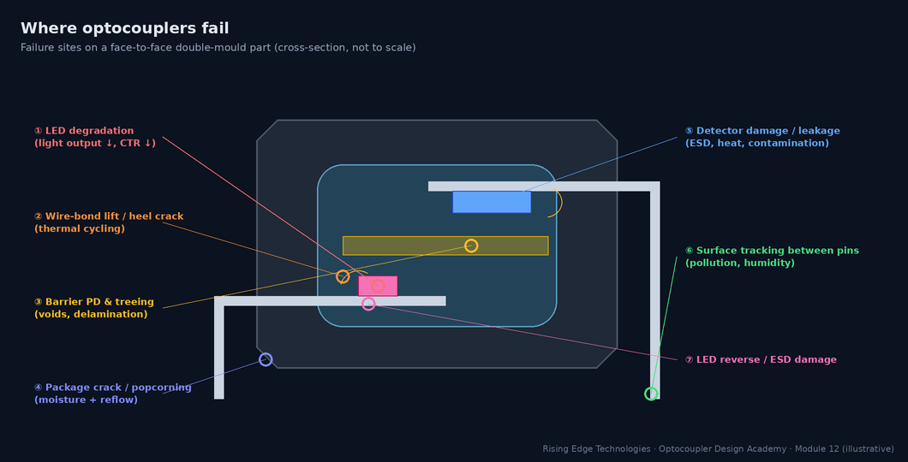
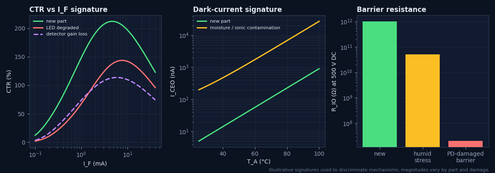
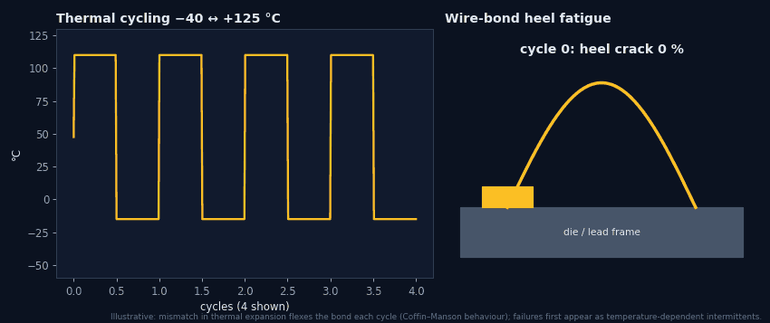
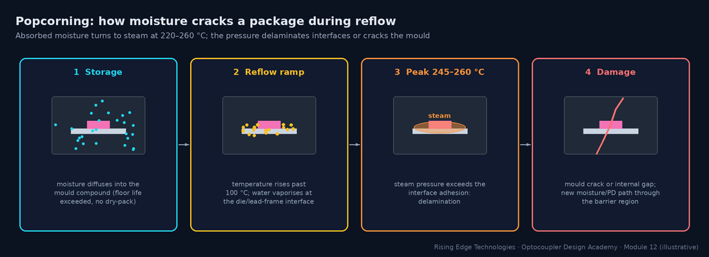
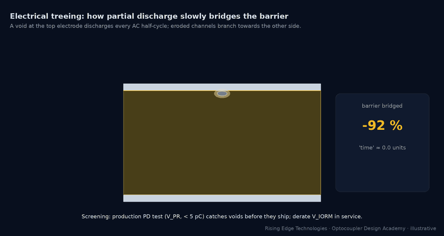
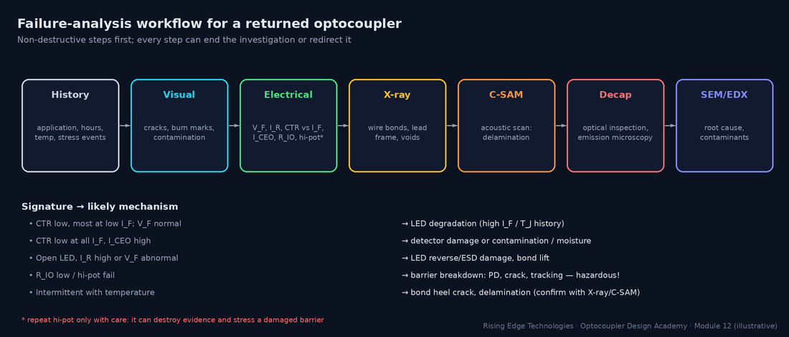

Failure Mechanisms
How optocouplers die: LED light-output degradation kinetics, CTR drift signatures in field data, thermal and moisture stress paths, ESD damage patterns, and the rare but serious isolation barrier breakdown — with screening and prevention strategies for each.
Illustrations and animations are original teaching drawings, not to scale. Values marked representative are typical of common parts; always confirm against the current datasheet or standard you design to.
Optocouplers fail in a small number of well-understood ways. Most are slow drifts (LED ageing, leakage growth) that a margin-based design absorbs. A few are sudden (reverse breakdown, cracked packages). One, barrier breakdown, is a safety failure that must be prevented by design rather than detected in service.

RPN (risk priority number) is a ranking aid, not an absolute measure. Many organisations now also use action priority (AP) tables (AIAG–VDA FMEA), where high severity demands action regardless of RPN.
The infrared LED is the only component that wears out under normal operation. Its light output falls because non-radiative recombination centres (crystal defects) multiply during operation:
Defect growth
Dislocations and point defects in and near the active layer grow, fed by recombination energy and current. Each defect is a site where carriers recombine without emitting light.
Current density
More carriers per unit area means faster defect generation: degradation rises super-linearly with IF.
Temperature
Defect migration is thermally activated (Arrhenius). Junction temperature includes the LED’s own heating.
Low-current sensitivity
Non-radiative losses matter most at low current, so an aged LED loses proportionally more light at low IF.
A returned part rarely comes with a diagnosis. Measuring CTR at several currents, leakage at temperature and barrier resistance tells mechanisms apart:

| Mechanism | CTR signature | Other clues |
|---|---|---|
| LED degradation | Lower, and much lower at low IF | VF normal; history of high IF/TJ |
| Detector damage (ESD/EOS) | Lower at all currents, gain shape changed | Output leakage or VCE(sat) abnormal |
| Contamination / moisture | Often normal at 25 °C | ICEO high when hot/humid; residue visible |
| Encapsulant darkening | Uniformly lower | Long high-temperature exposure; yellowed clear mould after decap |
| Barrier damage | May be normal! | RIO low, hi-pot or PD test fails |
Temperature swings stress the package mechanically because silicon, GaAs, copper lead frames, gold wires and epoxy all expand at different rates:
Wire-bond heel fatigue
The bond wire flexes each cycle; cracks grow at the heel until the wire opens. First symptom: temperature-dependent intermittents.
Die-attach fatigue
Voids and cracks in the die attach raise thermal resistance, which raises TJ and accelerates LED ageing.
Package cracking
Large ΔT or thermal shock cracks the mould, opening paths for moisture.
Mitigation
Qualified parts (JEDEC/AEC temperature cycling), reduced ΔT (placement away from heat sources), conformal coating that does not stress the package.

Mould compounds absorb water. Moisture causes two separate problems:
Popcorning in reflow
Absorbed moisture flashes to steam at reflow temperature and delaminates or cracks the package. Controlled by the MSL rating, dry-pack, floor-life tracking and baking (J-STD-020/033).
Leakage and ion migration in service
Humidity plus ionic contamination (flux residue, salt) raises surface leakage and dark current; under bias, metal ions can migrate between pins (dendrites).

Worked example — floor life
An MSL-3 part has a floor life of 168 h at ≤ 30 °C / 60 % RH (J-STD-033 representative). A reel sat open for two weeks before a rework campaign.- Two weeks = 336 h > 168 h → the parts must be baked before reflow (per J-STD-033 tables for package thickness).
- Skipping the bake risks cracks and delamination that pass functional test but weaken the barrier.
Electrostatic discharge and electrical overstress hit both sides of the coupler:
| Where | Mechanism | Protection |
|---|---|---|
| LED (input) | Reverse ESD or reverse EOS exceeds VR (≈ 5–6 V): junction damage, sometimes gradual | Anti-parallel diode, TVS on field inputs, handling controls |
| Output transistor | ESD on long output lines; inductive kick above VCEO | Clamps, flyback diodes, VCEO margin |
| Across the barrier | ESD between input and output (e.g. a user touching isolated I/O) | Barrier rating, Y-cap or spark gap paths, clearance |
| Latent damage | A partially damaged junction works, but with higher leakage and faster ageing | ESD-safe handling; screen suspect lots |
Barrier failure is rare but hazardous: it can put mains voltage on touchable circuits. It almost always develops over time from one of four precursors:
Partial discharge & treeing
Voids or delaminated interfaces discharge each half-cycle once the local field exceeds inception. Erosion channels (trees) grow until they bridge the barrier.
Surface tracking
Contamination plus humidity on too-short creepage paths forms carbon tracks between pins (external) or along internal interfaces.
Overvoltage events
Surges beyond VIOSM or sustained operation above VIORM punch through or accelerate PD.
Mechanical damage
Cracks from popcorning, thermal shock or board flex create new discharge paths.

| Precursor you can measure | What it indicates |
|---|---|
| PD level rising (pC) | Active voids; tree initiation |
| RIO falling | Moisture ingress, tracking, carbonised paths |
| Hi-pot leakage current rising | Degraded insulation |
| Visible tracks / discolouration between pins | Surface tracking |
Prevention is mostly design discipline; screening catches manufacturing escapes:
| Mechanism | Prevention (design) | Screening (production) |
|---|---|---|
| LED ageing | IF ≤ 50 % derated, CTR margin, TJ control | Vendor lot data; incoming CTR sampling |
| Reverse / ESD | Anti-parallel diode, TVS, ESD process control | IR/VF test |
| Thermal fatigue | Qualified parts, reduced ΔT, placement | Temperature-cycling qualification |
| Moisture / popcorning | MSL handling, dry-pack, bake, clean process | C-SAM sampling after changes |
| Contamination leakage | No-clean flux residue control, coating, pull-up sizing | Hot functional test, ICEO at T |
| Barrier breakdown | VIORM ≥ peak working voltage, PD-tested parts, creepage per real PD | Component PD test (vendor), end-of-line hi-pot at appropriate level |
A disciplined workflow preserves evidence: non-destructive tests first, destructive analysis last.

The LED wears out
Defect growth, accelerated by current density and temperature, hits low-current CTR hardest.
Signatures discriminate
CTR vs IF, hot ICEO, and RIO separate LED, detector, contamination and barrier problems.
Heat cycles break bonds
Temperature-dependent intermittents point to bond or die-attach fatigue.
Moisture has two faces
Popcorning in reflow; leakage and migration in service.
Protect the LED in reverse
VR is only a few volts.
Barrier failures grow
PD, tracking, overvoltage and cracks are precursors; design them out.
CTR hides barrier damage
Only RIO, PD and hi-pot reveal it.
Preserve evidence
Non-destructive analysis first.
Design checklist
Tick items as you review a design. Your ticks are saved in this browser only; use your browser’s print function for a sign-off copy.
Four parts: multiple choice, true/false, a matching exercise and engineering scenarios. Score 80 % on the multiple choice to pass the module.